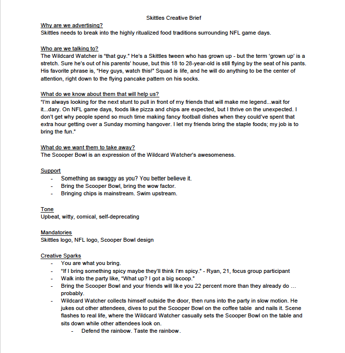
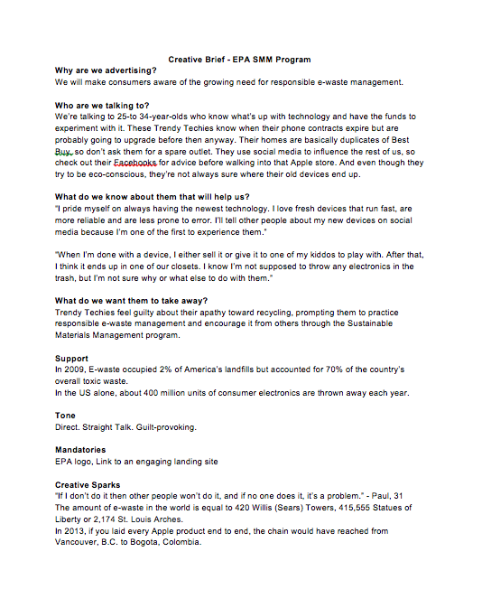
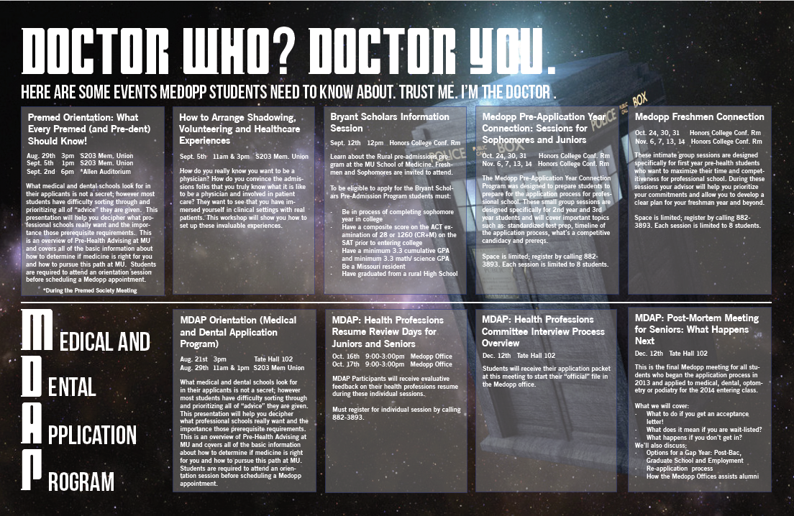

Work Samples
Here are some examples of my work.

This is the research booklet I assembled with my capstone group. We surveyed over 700 Youth and Young Adult (YAYA) consumers to establish insights for marketers concerning the 18-to 24-year-old demographic. Click the image to read the full booklet. This image is reproduced with permission from MOJO Ad.
This was the introductory video for my capstone group's project on Ocean Spray. We had the opportunity to present our ideas about marketing to the youth and young adult market to Ocean Spray personnel in spring 2017. The music used in the video belongs to The Romantics. We used information gleaned from the SOY booklet to construct our campaign. Click the image to view the full video. This image is reproduced with permission from artists Maddy Siriouthay and Brigitta Han.

This is the completed plan book for a campaign designed to blend the Skittles and NFL brands together. I worked on this assignment in a brand management course as a hypothetical execution with a team of six. Click the image to read the full book.

This is the creative brief my team used to execute the ideas laid out in the Skittles Plan Book, a hypothetical execution for Skittles and the NFL per a course at MU. I wrote it with a team of three in Spring 2016. Click the image to read the full brief.

This is a creative brief I wrote for a project focused on how to deal with electronic waste for a brand management class I took in undergraduate school. I worked with two other students to craft this brief. Click the image to read the full brief.

This is a bulletin that I designed for the University of Missouri Honors College. I am proficient in InDesign and Photoshop, so I took on design projects as needed for the Honors College. Click the image for a larger view of the bulletin. The background image is sourced from Unsplash.